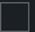

G6, ONE
G6 or Dexcom ONE⌁
This describes how to set up a Dexcom G6 or Dexcom ONE transmitter and sensor with xDrip. From xDrip's perspective the two are the same device — same transmitter hardware, same BLE protocol — so every step below applies equally to both.
Reference documentation is here.
For G7 or ONE+, see the separate G7, ONE+ page instead.
Prerequisites⌁
- Check your phone setup matches xDrip prerequisites.
- You cannot normally have both xDrip and the Dexcom app collecting directly from the same transmitter at the same time. Uninstall the Dexcom app if you want xDrip to be the collector. If you need to keep using the Dexcom app, only it can be the collector — set up xDrip as a Companion app follower instead.
Don't pair from Android Bluetooth settings
Never try to pair the transmitter from Android Bluetooth settings page — let xDrip trigger the pairing request instead, and approve it when asked. The transmitter only transmits for few seconds once every 5 minutes, so don't be surprised if Android doesn't list it under paired devices most of the time.
The System Status page (top-left menu) has a "Dex Status" heading with the parameters you'll need throughout this page: transmitter ID, time since last connection, firmware version, transmitter days, and battery voltages.
Dexcom device compatibility⌁
- t:slim pump — start the G6 sensor on the pump, not in xDrip, and don't also start it in xDrip. After the warm-up period xDrip will detect and pick up the running session on its own (tap Restart Collector on the Classic Status page if it doesn't). You don't need to enter the calibration code into xDrip either — only the transmitter needs it.
- Dexcom receiver — you can run it alongside xDrip, but avoid sending duplicate start/stop/calibrate commands from both. If you must use the receiver, start the sensor there and let xDrip pick up the session after warm-up. Don't stop the sensor from xDrip thinking it only affects xDrip — it stops the whole session on the transmitter.
- You cannot use a t:slim pump and a Dexcom receiver at the same time (they need the same transmitter slot), and you cannot use xDrip and the Dexcom app at the same time either — unless the Dexcom app is the only one collecting, in which case xDrip can follow it via the Companion app.
Before you start⌁
To start, you need a transmitter and a sensor.
Transmitter expiry
Check the two dates printed on the transmitter box: the manufacture date, and a Ship-By or Use-By date. Don't accept a transmitter whose Ship-By/Use-By date has already passed. Don't remove a transmitter from its box, or touch its contacts, until you intend to use it — an internal day counter starts the moment you do, and it cannot be stopped. The warranty is only valid if you start using the transmitter within 5 months of it being shipped to you, and the last day you can start (or restart) a sensor on a G6 transmitter is transmitter day 99.
Recommended settings before you begin:

Settings 
Hardware Data Source → Dex
Dex Debug Settings
Less common settings → Other misc options
Less common settings → Bluetooth Settings
Less common settings → Aggressive service restarts 
Less common settings → Advanced Calibration → Automatic Calibration
Setting up for the first time⌁
Please be patient
Do not rush to tap "Start Sensor" even if xDrip encourages you to. Follow the steps below in order to avoid the most common issues.
Settings
Hardware Data Source
Dex
- If you're using a brand-new transmitter, take note of its serial number, printed on the transmitter and on its box. It activates as soon as you snap it into a sensor — you'll need this number for up to 110 days. If the serial number ends in
-1, use only the first six characters. - Every sensor has a 4-digit calibration code printed on its adhesive cover — you'll need it to start the session. Don't open the sensor container until you're ready to insert it, and don't throw away the adhesive cover before you've noted the code.
- If there's a command stuck in the queue on the Dex Status page, clear the queue before continuing.
- If "Start Sensor" isn't offered as an option from the top-left menu, tap "Stop Sensor" instead and wait 5 minutes.
- The transmitter must be detached from your body for at least 10 minutes before you proceed — removing it without damaging the sensor explains how, if you're moving it from a previous sensor.
- If you're activating a new transmitter, enter its serial number as the Transmitter ID: Settings → Dexcom Transmitter ID.
- Clean the transmitter contacts with rubbing alcohol (skip this if you're restarting the same sensor) and let them dry for about 10 seconds. Snap the transmitter into the sensor — this is what activates a brand-new transmitter.
- Insert the sensor following the manufacturer's applicator instructions. You may notice small blobs of petroleum jelly around the contacts inside the sensor — don't wipe them off, and keep dust and blood away from the contacts; see Petroleum jelly around the contacts if you want the full explanation.
- Watch the System Status Dex Status page — it updates every 5 minutes. Don't proceed if you don't have proper connectivity; sort that out first. If you're activating a new transmitter, be patient and wait for the battery voltages to appear before continuing — it can take up to half an hour.
- Tap Start Sensor and enter the 4-digit calibration code from the sensor's adhesive cover when asked. Keep the code — you may need it again later.
Never soak a sensor
Never soak (insert a sensor a while before starting it in xDrip). Factory calibration is the main advantage of G6/ONE over G5, and soaking interferes with it. The longer the gap between inserting the sensor and starting it, the more you undermine that accuracy.
Readings normally start about 2 hours after starting the sensor, with no initial calibration needed. If you're coming from G5 or another CGM, give factory calibration a chance — most people don't need to calibrate a G6/ONE sensor at all as long as the calibration code was entered correctly.
Starting a subsequent sensor⌁
When one sensor's session ends, a single transmitter can be moved on to a new sensor and reused — up to around 11 sensors over its lifetime.
- Tap Stop Sensor from the top-left menu (even if the sensor has already stopped and "Start Sensor" isn't offered yet). Wait for "stop sensor" to clear the queue on the Dex Status page — this normally takes about 5 minutes.
- Remove the old transmitter without damaging the sensor it's currently in, so you can keep using the sensor's adhesive site, or simply peel off the old sensor if you're done with it.
- Follow Setting up for the first time again from step 5 onward, using the new sensor's own calibration code.
Info
Reusing the same sensor for longer than its normal session by tricking the transmitter into restarting it is a separate, riskier technique with a real risk of causing incorrect high readings — see Restarting a sensor in troubleshooting before attempting it.
Calibration⌁
See Calibration basics and Calibrate for what calibration is and when you should do it. You shouldn't need to calibrate a G6/ONE sensor at all under normal factory calibration — over-calibrating is discouraged by the manufacturer too.
If you do need to calibrate, tap "Add Calibration" from the top-left menu. This only becomes available after at least 3 readings have come in following a sensor start or restart. Only calibrate when the trend is flat or close to flat, and never enter a calibration that corrects the current reading by more than 20%. If you need a bigger correction, space consecutive calibrations at least 25 minutes apart (45 minutes before a third one) rather than doing it in one large step — otherwise you risk a confused calibration error that can stop readings for hours with no way to know how long the recovery will take.
Problems?⌁
Try the G6, ONE troubleshooting page.
Dexcom advanced settings reference⌁
Settings
Hardware Data Source
Dexcom Transmitter ID / Dex Debug Settings
Reference documentation is here.
Dexcom Transmitter ID⌁
Tells xDrip which transmitter to scan for, authenticate against, and associate incoming BLE traffic with.
Collector: Dexcom collectors and Dex-related bridge paths — Dexcom G5/G6/G7 and some Dex bridge setups
Dexcom Transmitter ID
Native Algorithm⌁
Uses the transmitter's own glucose/eGlucose request path when supported, instead of the raw sensor-data path.
Collector: OB1 Dex collector (Ob1G5CollectionService) — Dexcom G5/G6/G7
Native Algorithm
Minimize Scanning⌁
Reduces scan frequency using timing and known-device heuristics to save battery.
Collector: OB1 Dex collector (Ob1G5CollectionService) — Dexcom G5/G6/G7
Minimize Scanning
Avoid Scanning⌁
Pushes scan reduction further, relying more heavily on previously known transmitter timing and identity.
Collector: OB1 Dex collector (Ob1G5CollectionService) — Dexcom G5/G6/G7
Avoid Scanning
Allow OB1 unbonding⌁
Allows xDrip to remove and rebuild the BLE bond when Dexcom pairing or encryption gets into a bad state.
Collector: OB1 Dex collector (Ob1G5CollectionService) — Dexcom G5/G6/G7
Allow OB1 unbonding
Special pairing workaround⌁
Changes the OB1 pairing/connection sequence to work around device-specific bonding problems.
Collector: OB1 Dex collector (Ob1G5CollectionService) — Dexcom G5/G6/G7, especially troublesome phone models
Special pairing workaround
Specified Slot (engineering)⌁
Overrides the authentication slot used in the Dexcom auth flow, for engineering/troubleshooting cases.
Collector: OB1 Dex collector (Ob1G5CollectionService) — Dexcom G5/G6/G7
Specified Slot